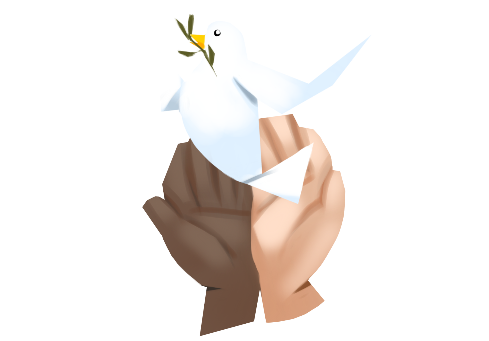

Convite: Construção de caminhos na Educação para a Paz
A Feira de Ciência e Cultura com o tema "Construção de caminhos na Educação para a Paz" tem como objetivo principal proporcionar aos estudantes do ensino fundamental II e médio a oportunidade de expor trabalhos, pesquisas, trabalhos artísticos e experimentos relacionados ao tema da paz, promovendo a conscientização e o engajamento dos participantes na construção de uma cultura pacífica.
- Data: 24/06/2023
- Horario: das 13h às 17h
- Local: Colégio Integração
- Feira aberta à comunidade
Projeto: Utilização das redes sociais para propagação da paz
A propagação do ódio nas redes sociais tornou-se um tema de grande preocupação na sociedade atual. Com o rápido crescimento da internet e das mídias digitais, as redes sociais se tornaram espaços onde ideias e opiniões são compartilhadas amplamente. Infelizmente, também se tornaram terreno fértil para a disseminação de discursos de ódio, intolerância e preconceito.
Neste contexto, é crucial entender os mecanismos por trás dessa propagação e buscar soluções para promover um ambiente digital mais saudável, inclusivo e livre de ódio.
Nesse contexto, foi pedido aos alunos do curso de Programação web que fizessem páginas web abordando maneiras de propagar a paz através das redes sociais.